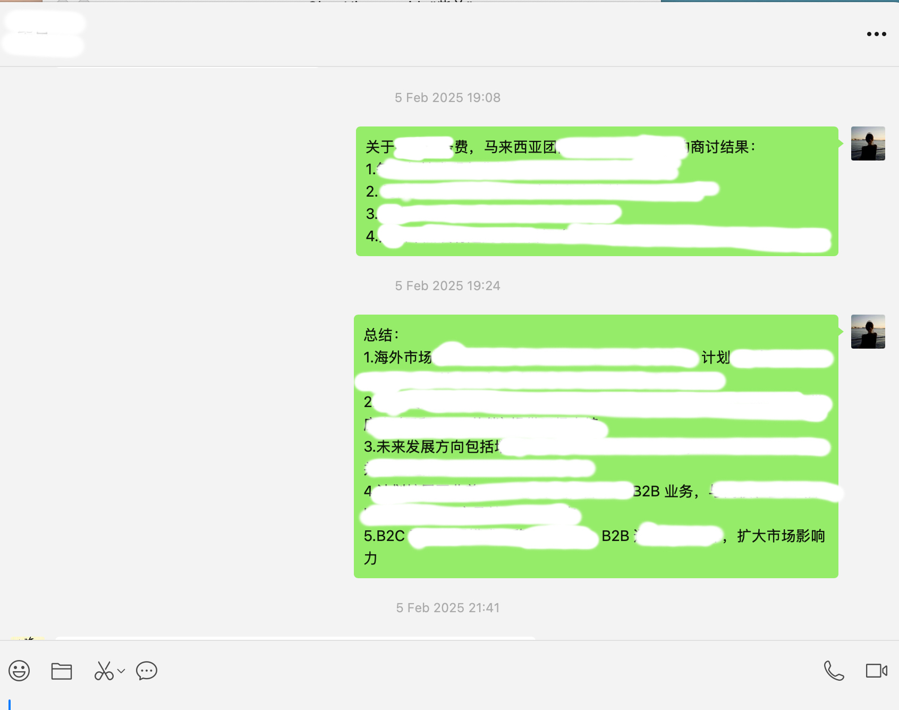
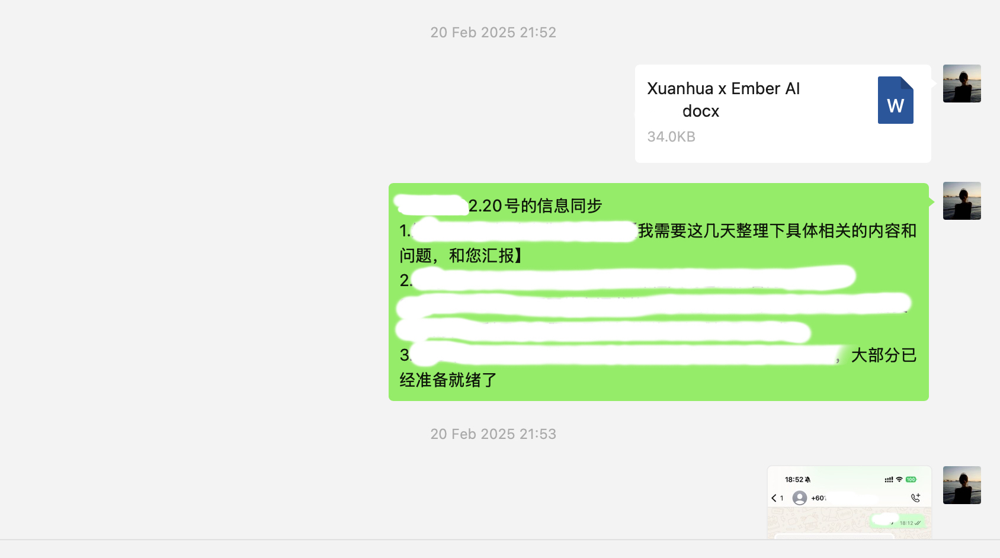

反馈归类与选题
管理高校用户社群，分类整理100+条反馈，识别高频需求与体验障碍，用于内容选题。
PROJECT 02 / AI PRODUCT CONTENT · WECHAT & CASES
从100+条高校用户反馈提炼高频问题与内容选题，从0到1建设产品公众号，输出30+篇指南、FAQ、教程及场景案例，让AI产品功能与应用场景更易理解。
反馈归类 / 公众号建设 / 场景案例 / 内容复盘
查看内容闭环01 / 背景与职责
高校用户在教学、备课和自学中有不同任务。公众号需要把产品功能、使用步骤与应用场景讲清楚，也需要持续回应社群中的高频问题。
我以用户反馈为选题依据，建设公众号并沉淀可复用内容；再协同产品、业务团队准备教师案例、演示与高校宣讲材料，将新反馈带回内容和产品。
管理高校用户社群，分类整理100+条反馈，识别高频需求与体验障碍，用于内容选题。
将产品功能、步骤及应用场景转为易理解的内容，输出30+篇指南、FAQ、教程及案例。
协同产品、业务团队准备演示、教师案例与课程材料，对接高校组织宣讲、体验和答疑。
结合用户行为与师生反馈提出10条优化建议，支持试点推广与产品迭代。
02 / 反馈与内容选题
通过社群分类整理100+条反馈，识别教学、备课和自学中的高频需求与体验障碍。将调研结果用于产品卖点提炼、公众号选题和宣传资料优化。
结合社群与高校交流，汇总教学、备课、自学中的需求、疑问与使用障碍。
把高频需求对应到产品功能、使用步骤及场景，形成指南、FAQ、教程与案例。
协同准备产品演示、教师案例、FAQ及课程材料，支持高校宣讲、体验与答疑。
结合用户行为与师生反馈提出优化建议，支持试点推广与产品迭代，补充后续内容。
流程为工作方法整理，内部反馈原文与明细未公开；不以场景示意替代真实用户访谈记录。
03 / 公众号建设与内容交付
从0到1建设产品公众号，累计输出30+篇指南、FAQ、功能教程及场景案例。将AI教育产品功能、使用步骤及应用场景转化为易理解的表达，并沉淀可复用素材。
用户需求初次接触产品，希望了解适用任务及如何开始使用。
我的工作提炼产品卖点，按照场景、入口和首次操作组织公众号说明；支持产品演示准备。
用户需求已有具体任务，需要知道输入要求、关键步骤及结果查看方式。
我的工作将操作拆成可理解的步骤，协同核对产品信息，使线上教程与现场演示保持一致。
用户需求重复出现的使用疑问，需要可查阅、已确认的说明。
我的工作归类高频问题，准备FAQ；现场负责答疑，待确认问题记录后交由相关团队核查。
用户需求希望理解功能如何用于教学、备课或自学，而不仅是知道功能名称。
我的工作输出场景内容，协同准备教师案例与课程材料，以任务、操作及结果串起产品价值。
公众号提供指南、FAQ、教程及案例，帮助用户理解产品价值与使用方式。
演示、FAQ、教师案例及课程材料支持高校宣讲，现场记录新问题。
将可通过说明解决的问题补入资料，需要产品改进的事项提交团队跟进。
上述结构为内容组织方法整理，非内部原始文档。30+篇包括指南、FAQ、教程与案例，不重复统计为不同项目产出。
04 / 案例传播与高校推广
协同产品、业务团队准备演示、教师案例、FAQ及课程材料，再对接高校组织宣讲、体验和答疑。东南亚合作是辅助工作，主要整理需求、项目分工与交接信息，并跟进协议签署和项目交接。
教学、备课与自学需求
产品疑问与体验反馈
确认宣讲体验需求及流程，协调演示准备，负责现场答疑并记录师生反馈。
协同准备产品演示、FAQ、教师案例及课程材料，核对功能说明并同步使用问题。
同步宣传材料、活动分工与执行安排，将现场问题和后续待办交由对应团队跟进。
协助整理合作需求、项目分工及交接信息，跟进协议签署与项目交接。
对接高校需求，安排活动流程，协同确认演示内容及答疑资料。
配合产品宣讲和体验，负责使用答疑，记录师生关注点及使用障碍。
汇总用户行为及师生反馈，提出优化建议，补充内容并支持后续试点推广。
个人工作以内容、案例、材料准备及协同执行为主；东南亚合作为需求、分工、协议与交接跟进辅助，不代表独立负责完整国际业务。
05 / 过程材料
高校交流照片和五份已脱敏合作记录呈现活动场景与协同跟进过程。30+篇公众号内容及使用率变化依照简历口径呈现，过程图片不替代内容原稿或后台明细。

活动照片呈现高校交流场景；个人工作为协同准备演示与案例材料、组织宣讲体验和答疑。

同步已有合作信息，整理需要进一步确认的问题。

围绕合作方案同步意见，跟进内部反馈。

整理商讨结果，汇总市场与后续合作相关意见。

发送合作文件，同步待整理的信息与相关问题；发送记录不作为签署证明。

整理并发送相关文件，配合查阅与存档。
06 / 结果与迭代
公众号内容与案例材料帮助解释产品，高校宣讲和体验带回新问题。以下为简历中的真实产出与期间表现，AI工作流另以方法演示说明。
为实习期间整体使用表现，不等同于新增用户增长、30个百分点或单一内容的独立效果。
结合用户行为与师生反馈提供建议，支持试点推广与产品迭代；建议数量不代表全部已上线。
指南、FAQ、功能教程及场景案例的合计产出，将产品信息转为易理解的内容，沉淀可复用素材。

团队合作项目的签约场景；个人参与内容为需求、项目分工与交接信息整理，以及协议签署和项目交接跟进。
100+条反馈 → 高频问题与选题 → 30+篇公众号内容 → 产品演示、教师案例与高校宣讲 → 10条优化建议 → 根据使用表现与反馈补充内容。
反馈去标识与归类 → AI草拟选题和提纲 → 人工核对产品信息 → 整理图文与案例 → 审核发布 → 复盘与复用。此流程为基于项目经历整理的方法演示，可形成SOP、检查清单及常用模板，不作为当时已运行的自动化流程或新增历史成果。